Reporting & Dashboards
How internal DOE staff (OA/OD/Admin/Portfolio Team) and CBO/FCCN vendor users each find and use the reports and dashboards ECMS makes available to them — and why the two groups see a genuinely different set, in a different place in the UI.
Overview
ECMS ships with a real set of pre-built Reports and Dashboards — not a generic Salesforce reporting sandbox, but a curated set scoped to ECMS's own objects (Enrollments, Attendance, Budgets, Invoices, Incidents). Who sees which reports and dashboards comes down to one thing: which of two permission sets a user was provisioned with. Internal DOE staff get the "ECMS Reports Permission set," which is now assigned automatically during provisioning rather than requiring a manual follow-up step. CBO/FCCN vendor users get a different one, "ECMS Reporting and Dashboards," scoped to a smaller, vendor-appropriate set of the same underlying data.
Steps
1Find the Reports tab (internal)
DO As an Operations Analyst, Operations Director, ECMS Admin, or Portfolio Team Member, open the Reports tab from the internal app's nav bar (or the App Launcher if it's not pinned).
RESULT The Reports home page opens, defaulting to a Recent view. The internal Home page itself (shown here) doesn't embed a dashboard the way the vendor portal does — instead it surfaces the Items to Approve component (covered in the Invoice guide) and a Recent Records panel, with reports and dashboards reached as their own dedicated tabs.
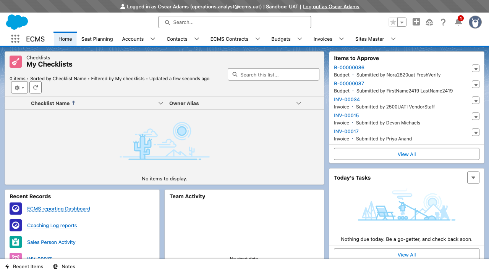
2Browse the ECMS Reports folder
DO From the Reports tab, open the ECMS Reports folder (internal users also have Budget Reports and ECMS Incident Management folders available).
RESULT A real, curated list of ECMS reports appears — Enrollments Awaiting Approval, Enrollments by Status and Seat Type, Active Enrollments Count by District, Current Fiscal Year Attendance Report, and more — each one built specifically against ECMS's own data, not a generic Salesforce starter report.
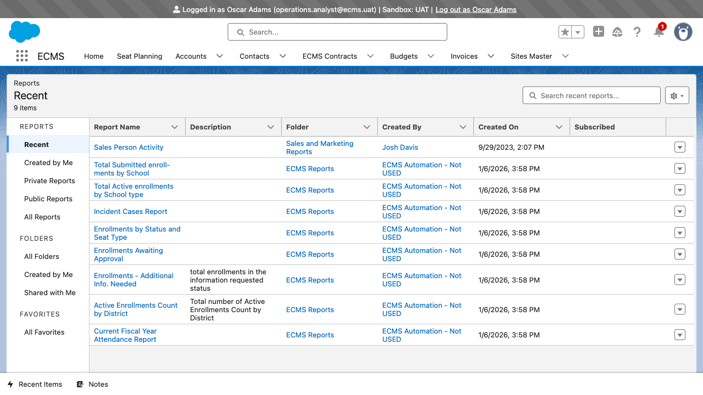
3Open a report
DO Click into Enrollments Awaiting Approval.
RESULT The report runs live against current data — in this org, 34 enrollments currently sitting in Submitted status, with a chart grouped by Status. Like any Salesforce report, it can be filtered, grouped differently, or exported from here.
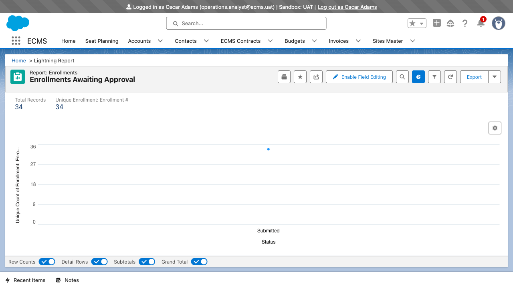
4Budget & Attendance reporting
DO Open Current Fiscal Year Attendance Report from the same folder.
RESULT The report returns real attendance-by-budget data — 184 records in this org, broken out by site (92 at Cedarwood - Flushing Campus, 92 at Willowbrook - Astoria Campus in this example).
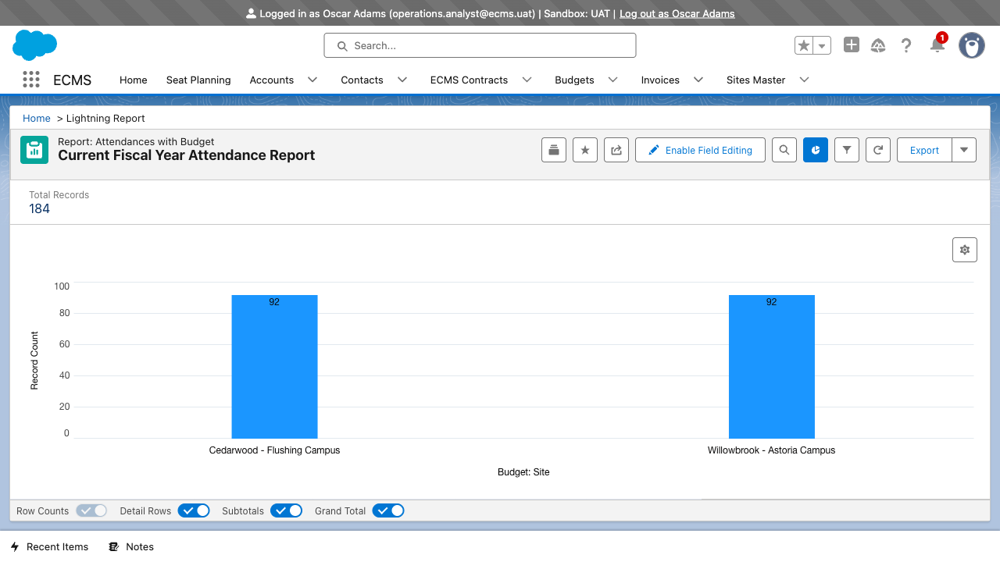
5FCCN multi-level attendance reporting
The ECMS Reports folder also includes a set of reports purpose-built for FCCN oversight, supporting the full Network → Provider → Seat Type → Child reporting hierarchy OA/OD/Internal Admin users need for monthly attendance verification:
- FCC SDY Certified vs Non-Certified — monthly certified/non-certified SDY attendance, grouped by Network and FCC Provider.
- FCC Incomplete Attendance Monitoring — incomplete attendance tracking.
- Network Roster — Classes & Seat Types — Network-level data: affiliated Providers, their Classes, and Seat Types.
- FCC Seat Types by Student & Provider — Seat Type, Student, and Provider detail together.
- FCC EDY Attendance Status (ACCIS) — EDY attendance status as received from ACCIS, since EDY attendance itself is tracked in CAPS Online, not ECMS (see the Attendance (FCCN) / TITO guide).
6Open the internal reporting Dashboard
DO From the Dashboards tab, open the ECMS Dashboards folder and click into ECMS reporting Dashboard (the folder also has FCC Attendance Dashboard, Seat Capacity Planning Dashboard, and ECMS Incident Dashboard).
RESULT A live dashboard loads with several real components at once — Total Active/Approved enrollments by School type (166 total, split Community-Based/Family Childcare), Total Submitted enrollments by School Type, Incident Cases Report, plus (scrolled further) Enrollments by Status and Seat Type and Active/Approved Enrollments Count by District — each with a View Report link to drill into the underlying report directly.
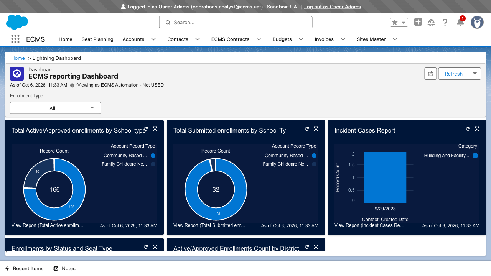
7Seat Capacity, Head Start, and EDY reports
DO From the Dashboards tab, open Seat Capacity Planning Dashboard.
RESULT Two live components load side by side: Total Seats by Seat Type (a horizontal bar chart — SDY, EDY, Head Start, Head Start CTL, CTL, and EDFY each with a real seat count) and Capacity vs Occupancy by School Type (grouped bars comparing Sum of Capacity against Sum of Seats Occupied for Community-Based and Family Childcare providers).
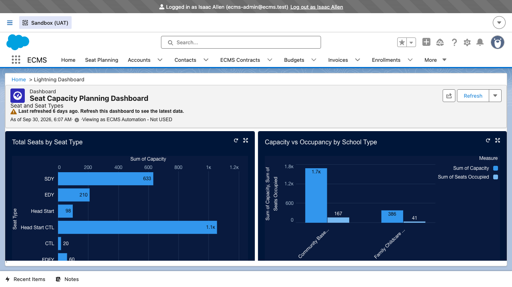
DO Separately, from the Reports tab's ECMS Reports folder, open Head Start Active Enrollments By School or EDY Active Enrollments by School Type.
RESULT Each report runs live — Head Start Active Enrollments By School returned 5 records (Family Childcare Network) and EDY Active Enrollments by School Type returned 8 records (Community Based Organization) in this org, each with a donut chart grouped by Account Record Type.
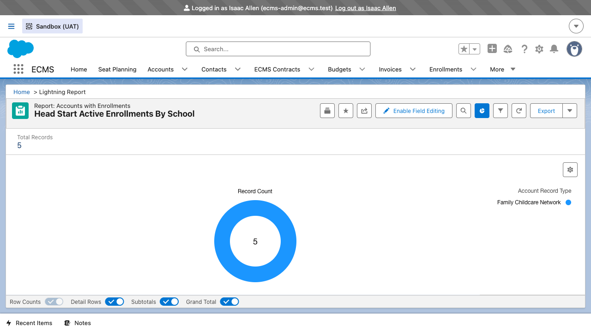
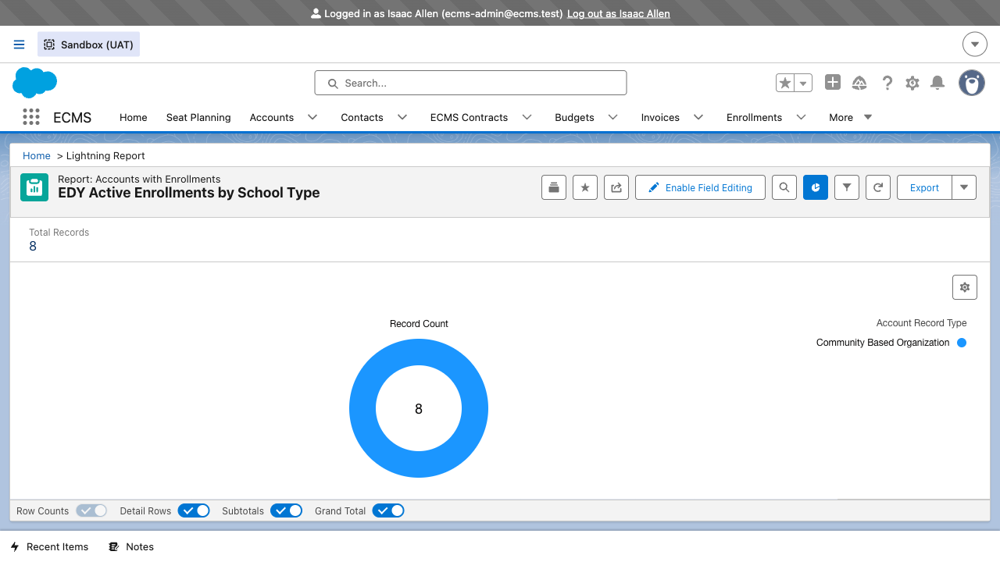
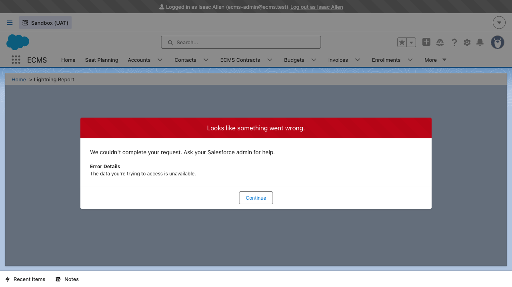
8Budget and Invoice reports
DO From the Reports tab, open All Folders and click into Budget Reports.
RESULT Seven real, pre-built reports appear — Budget Details Report, Budget Status History Report, Budget by Status, Borough, Types, Budget Contract Report for Fiscal Year, Budget Report with OA Name, Budget Status & Status History Report, and Budget Staff Vacancy, each with its own description.
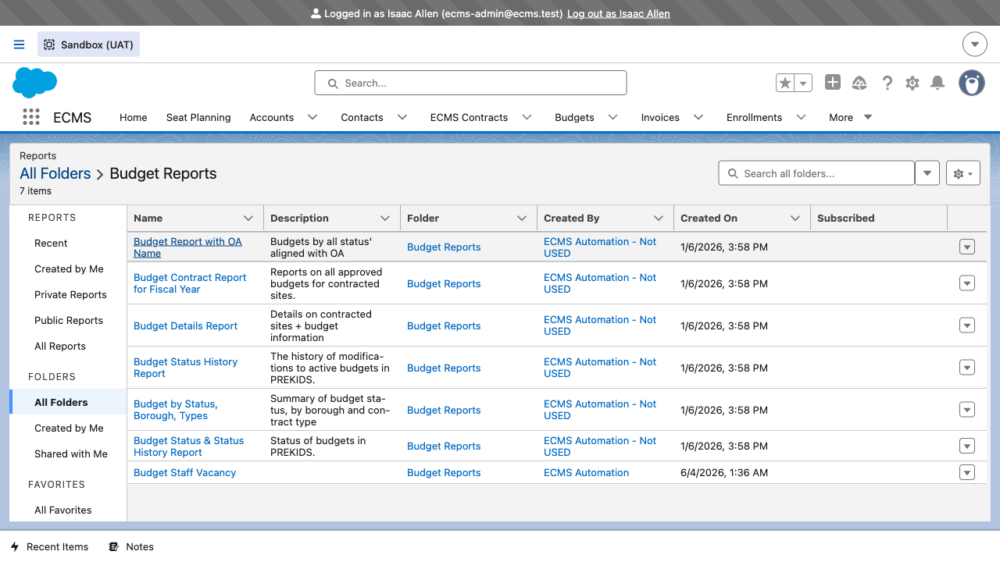
DO Open the Invoice Reports folder's Invoice Status Report.
RESULT The report runs live — 34 records, 38 total service months, $102,051.00 total invoice amount in this org — as a table with Fiscal Year, Budget, Invoice ID, Budget Number/Site, Tax ID, and Vendor Name columns.
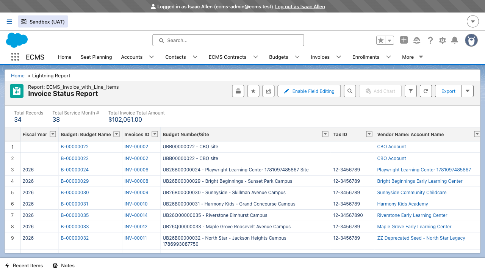
9Refresh a dashboard to see current data
DO On any dashboard (e.g. ECMS reporting Dashboard), click Refresh in the top right.
RESULT The dashboard re-runs its underlying reports and the "As of…" timestamp under the dashboard title updates to the current date/time — components no longer reflect a cached snapshot.
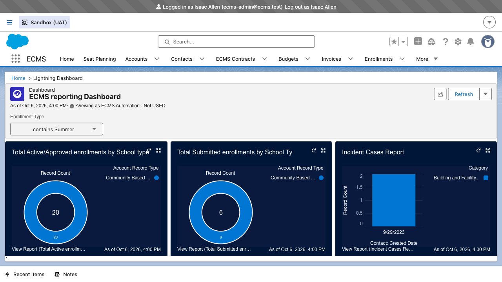
10Download, save, or manage a dashboard
DO Click the small dropdown arrow next to Refresh (labeled "More Dashboard Actions").
RESULT A menu opens with Download, Save As, and New Dashboard — this used to show only Download until DOEECMS-2125 (closed) granted the "Customize Dashboard" permission the rest of these actions needed.
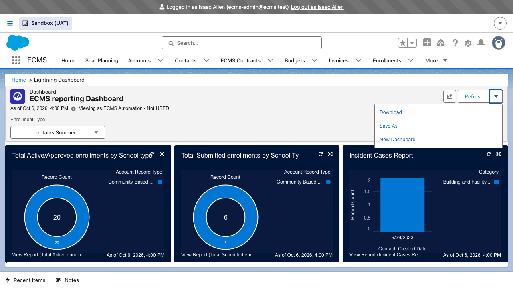
DO Click Save As.
RESULT A dialog opens pre-filled with a "Copy of…" name and the dashboard's current folder, letting you save an independent copy without affecting the original.
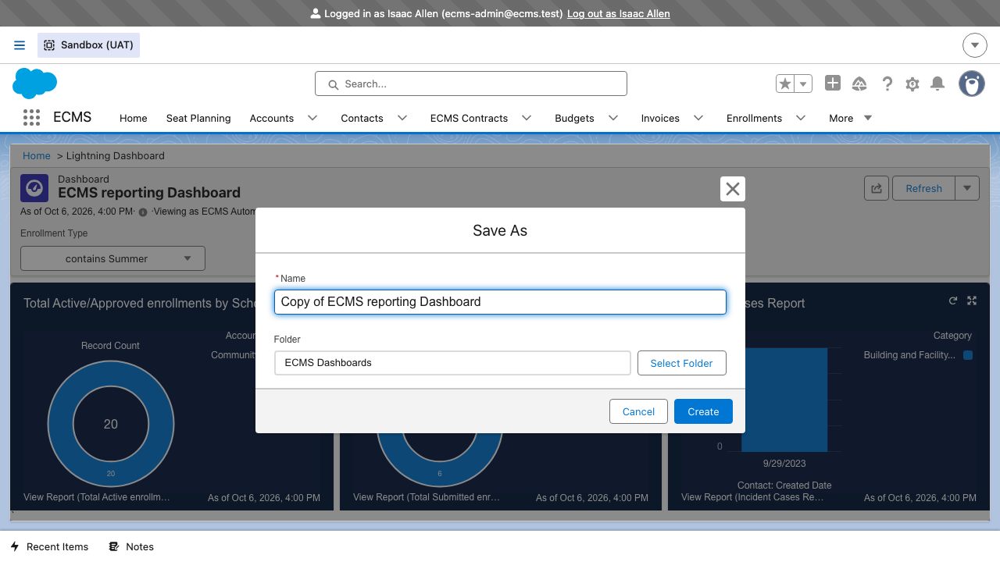
11Build a new dashboard from scratch
DO From the Dashboards tab, click New Dashboard, then enter a Name, optional Description, and Folder.
RESULT A naming dialog opens with Name (required), Description, and Folder fields (defaulting to Private Dashboards, with a Select Folder option) and Cancel/Create buttons.
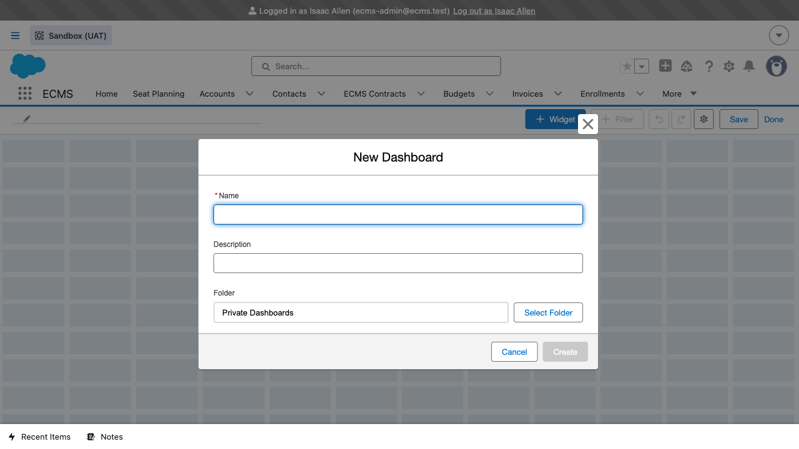
DO Click Create, then click + Widget in the empty builder that opens.
RESULT A new, empty dashboard canvas opens with Save/Done actions, and the widget gallery lists three widget types: Chart or Table, Text, and Image.
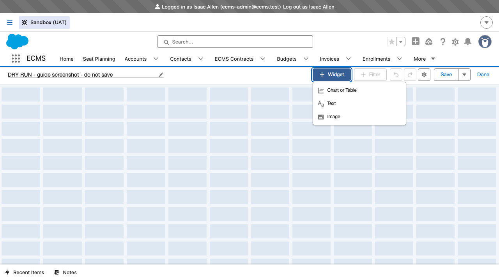
12Add Chart/Table, Text, and Image widgets
DO Click Chart or Table, pick an existing report as its data source (e.g. Total Active enrollments by School type), and review the Add Widget panel.
RESULT A live preview renders immediately using the real data behind the chosen report (127 Community-Based, 40 Family Childcare, in this example), alongside a Display As icon picker for chart/table type (bar, donut, line, table, and more — covering the "Horizontal Bar Chart," "Donut Chart," and "Lightning Table" styles described in Phase 1 training material) and chart-specific options like Y-Axis below.
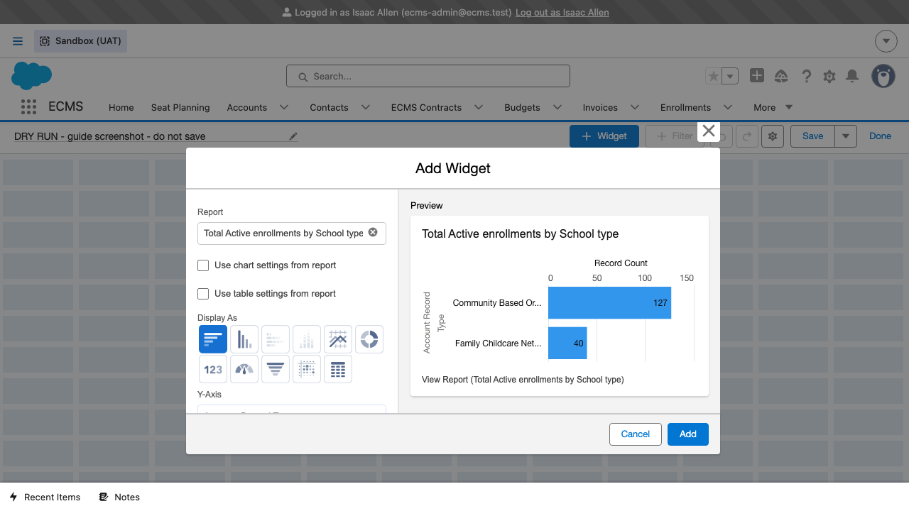
DO Click + Widget again and choose Text.
RESULT An Add Text dialog opens with a rich-text toolbar (font size, color, alignment, bold/italic/underline/strikethrough, link) and a free-text entry area.
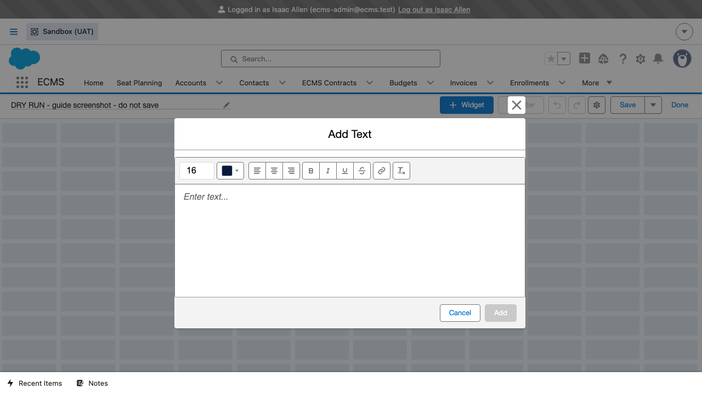
DO Click + Widget a third time and choose Image.
RESULT A Select Image dialog opens with Upload and Gallery tabs, and a drag-and-drop/Browse Files area for adding a logo or illustration to the dashboard.
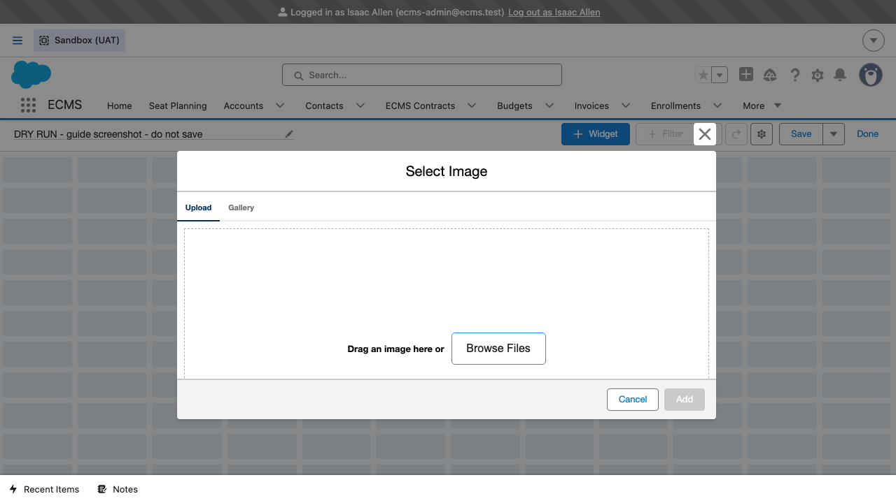
13Subscribing to a dashboard (known gap)
DO Phase 1 training material describes a Subscribe action that lets a user schedule a dashboard to refresh daily, weekly, or monthly and email the results. Look for it on a live dashboard today.
RESULT As of this writing, no Subscribe button could be found on any dashboard — the only sharing-related action present is Share > Get URL, which generates a link for someone who already has access to the dashboard, not a scheduled refresh/email subscription.
14Creating a new report (internal admins only)
DO Per HLR-R-009 ("System shall not allow users to create their own reports"), the ability to build a new report from scratch is meant to be restricted to internal administrators. Phase 1 training material describes the flow as: Reports tab > New Report > choose a Report Type > Start Report > add/remove/reorder Groups and Columns with a live preview > Save with a Name, Description, and Folder.
RESULT As of this writing, no New Report button could be found anywhere on the Reports tab (Recent or All Reports views) under the ECMS Admin login used for this guide — consistent with HLR-R-009's intent, though it's worth confirming whether a different internal persona (or a specific "Create and Customize Reports" permission) is what actually unlocks this button, since the Phase 1 material describes it as available to internal administrators generally.
15Vendor-side reporting (embedded on Home)
DO As a CBO/FCCN vendor user, check the portal's top nav bar and More menu for a Reports or Dashboards entry.
RESULT There isn't one — the vendor portal has no standalone Reports or Dashboards tab at all. The More menu only has Contracts, Budgets, Invoices, Report Incident, and CheckList.
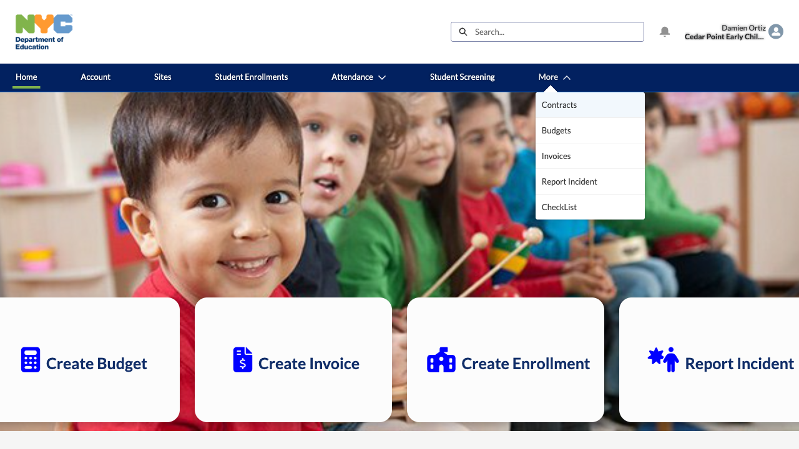
DO Instead, scroll down the vendor portal's own Home page, past the quick-action tiles.
RESULT A dashboard titled "ECMS reporting Dashboard External" is embedded directly on Home, with components like List of Active Budgets and Drafted Student Screenings — each sourced from the ECMS External Reports folder (which also includes Current Month Attendance by Class/ Seat Type/Site, Open Incident Cases, and Sites List), scoped to this vendor's own data.
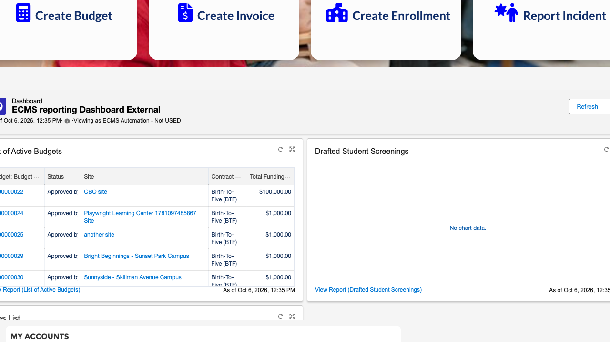
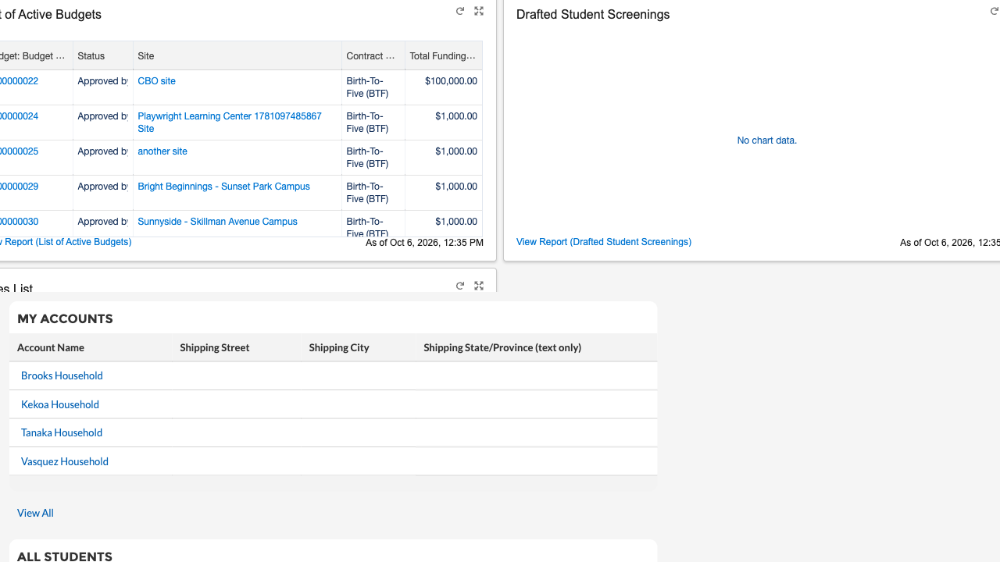
16Know what controls who sees what
DO If a user reports they can't see an expected report, dashboard, or Homepage component, check which of the two reporting permission sets they have — not just their profile or persona.
RESULT Internal users (OA, OD, ECMS Admin, Portfolio Team Member, Intake Team Administrator, and others) need the "ECMS Reports Permission set." External CBO/FCCN vendor users need "ECMS Reporting and Dashboards" instead. Both are now assigned automatically during user provisioning, rather than requiring a manual follow-up after someone hits a missing-report error.